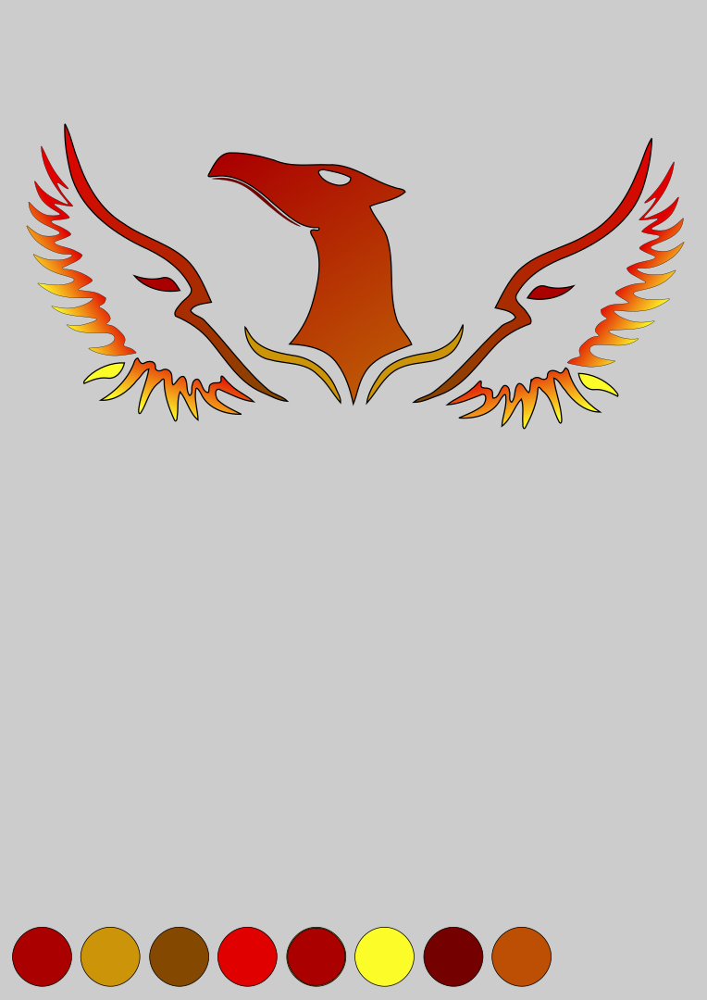

perses logo
In the twelfth grade, I was approached by three classmates to craft a logo for their school project, "Perses." To align with the project's focus on reporting damages to school property, I conceptualized and designed two logos featuring a phoenix motif, symbolizing rebirth. The logos were meticulously created using the graphic design software "Inkscape".
